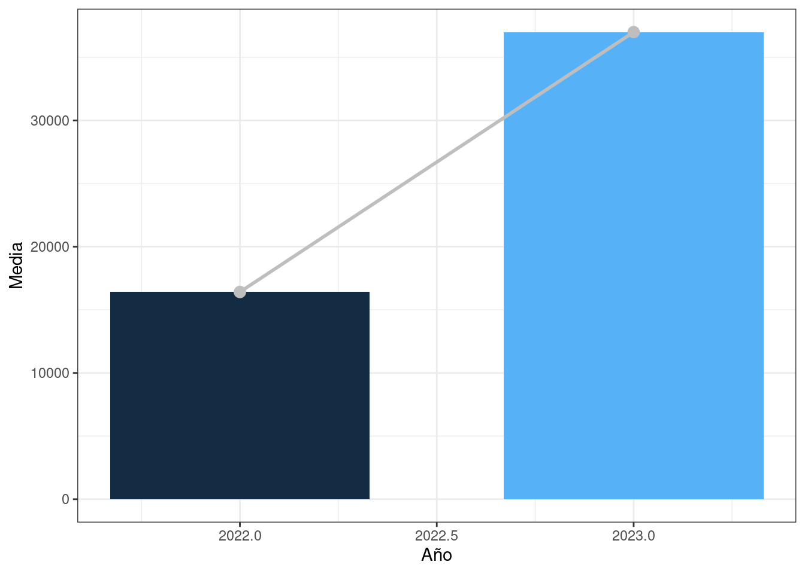
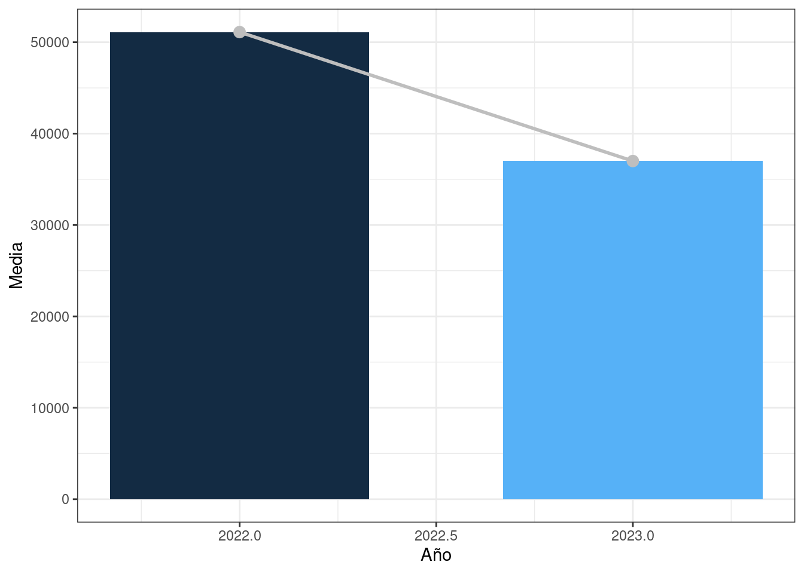

usu_individual_T422 <- readRDS(here::here("data/usu_individual_T422.rds"))
usu_individual_T423 <- readRDS(here::here("data/usu_individual_T423.rds"))8 Ayuda social: Distribución y evolución
8.1 Introducción
En el siguiente capítulo se analizará la distribución de la ayuda social en los individuos de la población argentina durante los periodos del cuarto trimestre del año 2022 y el año 2023. También analizaremos la evolución de la ayuda social durante estos mismos periodos, con el propósito de identificar si hubo diferencias. Para ello se utilizarán los datos obtenidos del Instituto Nacional de estadísticas y censo (INDEC) obtenidos en los años ya mencionados.
8.1.1 Herramientas de análisis
Para la realización del presente análisis se utilizó el lenguaje de programación R Base con los paquetes de tidyverse. Asimismo, se utilizó el sistema Quarto.
8.1.2 Procedimiento
Extraemos de la base de datos de INDEC, los periodos que comprenden el cuarto trimestre de los años 2022 y 2023. De los cuales, seleccionaremos los prospectos individuales que han recibido una ayuda social. Luego, para obtener información mas detallada, seleccionamos las regiones, los aglomerados (como cuidades grandes y cuidades pequeñas en relacion a mayor o menor concentración), .
source(here::here("R/agregar-uid.R"))
usu_individual_T422 <- usu_individual_T422 |>
agregar_uid_individual()
usu_individual_T423 <- usu_individual_T423 |>
agregar_uid_individual()usu_individual_T422 |>
filter(V5_M > 0) |>
nrow()[1] 2790usu_individual_T423 |>
filter(V5_M > 0) |>
nrow()[1] 2834Ordenamiento y flitrado de datos
Procedemos a filtrar los datos individuales de los cuartos trimestres de los años mencionados (2022-2023).
Para esto realizamos:
Utilizamos un “interset” del campo UIDs, para indentificar aquellos valores presentes en ambos conjuntos.
En segundo lugar utilizamos el conjunto de datos resultante del intersect, para filtrar los marcos de datos de 2022 y 2023. A su vez seleccionamos aquellos campos que son relevantes para el estudio y los renombramos.
Finalmente procedemos a mutar los campos Región, Aglomerado y Ciudad grande.
UIDs <- intersect(usu_individual_T422$UID,usu_individual_T423$UID)
usu_individual_T422_filtrado <- usu_individual_T422 |>
filter(UID %in% UIDs) |>
arrange(CODUSU) |>
select(Año = ANO4, Region = REGION, Ciudad_grande = MAS_500, Aglomerado = AGLOMERADO, Sexo = CH04, Monto_ayuda_social = V5_M)
usu_individual_T423_filtrado <- usu_individual_T423 |>
filter(UID %in% UIDs) |>
arrange(CODUSU) |>
select(Año = ANO4, Region = REGION, Ciudad_grande = MAS_500, Aglomerado = AGLOMERADO, Sexo = CH04, Monto_ayuda_social = V5_M)source(here::here("R/nombrar_aglomerados.R"))
source(here::here("R/nombrar-regiones.R"))
usu_individual_T422_filtrado <- usu_individual_T422_filtrado |>
mutate(Region = nombrar_regiones(Region)) |>
mutate(Aglomerado = nombrar_aglomerados(Aglomerado)) |>
mutate(Ciudad_grande = case_when(
Ciudad_grande == "S" ~ "Si",
Ciudad_grande == "N" ~ "No"
))
usu_individual_T423_filtrado <- usu_individual_T423_filtrado |>
mutate(Region = nombrar_regiones(Region)) |>
mutate(Aglomerado = nombrar_aglomerados(Aglomerado)) |>
mutate(Ciudad_grande = case_when(
Ciudad_grande == "S" ~ "Si",
Ciudad_grande == "N" ~ "No"
))
usu_individual_T422_filtrado# A tibble: 19,385 × 6
Año Region Ciudad_grande Aglomerado Sexo Monto_ayuda_social
<dbl> <chr> <chr> <chr> <dbl> <dbl>
1 2022 Pampeana Si Gran Rosario 1 0
2 2022 Pampeana Si Gran Rosario 2 0
3 2022 Pampeana Si Gran Rosario 1 0
4 2022 Pampeana Si Gran Rosario 1 0
5 2022 Noroeste Si Gran Tucumán - Tafí Vi… 1 0
6 2022 Noroeste Si Gran Tucumán - Tafí Vi… 2 0
7 2022 Noroeste Si Gran Tucumán - Tafí Vi… 2 0
8 2022 Noroeste Si Gran Tucumán - Tafí Vi… 2 16000
9 2022 Noroeste Si Gran Tucumán - Tafí Vi… 1 0
10 2022 Noroeste Si Gran Salta 1 0
# ℹ 19,375 more rowsOrdenamiento por ayuda social
Utilizamos un “bind_rows” para combinar filas de dos marcos de datos en uno solo.
Procedemos a graficar utilizando el marco de datos devuelto por “bind_rows”. Para eso filtramos los registros con “Monto_ayuda_social” mayor que 0 y realizamos dos graficos, el primero con los valores originales y el segundo con el ajuste por inflación.
usu_individual_T422_T423_f <- bind_rows(
usu_individual_T422_filtrado,
usu_individual_T423_filtrado
)source(here::here("R/graficar_ayuda_social_2022_2023.R"))
usu_individual_T422_T423_f |>
filter(Monto_ayuda_social > 0) |>
graficar_ayuda_social_2022_2023()
ajuste_por_inflacion <- 1 + (211.4 / 100)
usu_individual_T422_T423_f |>
mutate(Monto_ayuda_social = ifelse(Año == 2022, Monto_ayuda_social * ajuste_por_inflacion, Monto_ayuda_social)) |>
filter(Monto_ayuda_social > 0) |>
graficar_ayuda_social_2022_2023()
| Año | Media |
|---|---|
| 2022 | 51108.53 |
| 2023 | 37000.00 |
En conclusión lo que se puede observar en el primer gráfico, es que la ayuda social en 2023 es superior al 2022. Sin embargo, cuando realizamos el ajuste por inflación podemos asumir que el monto de ayuda social se redujo en el año 2023.